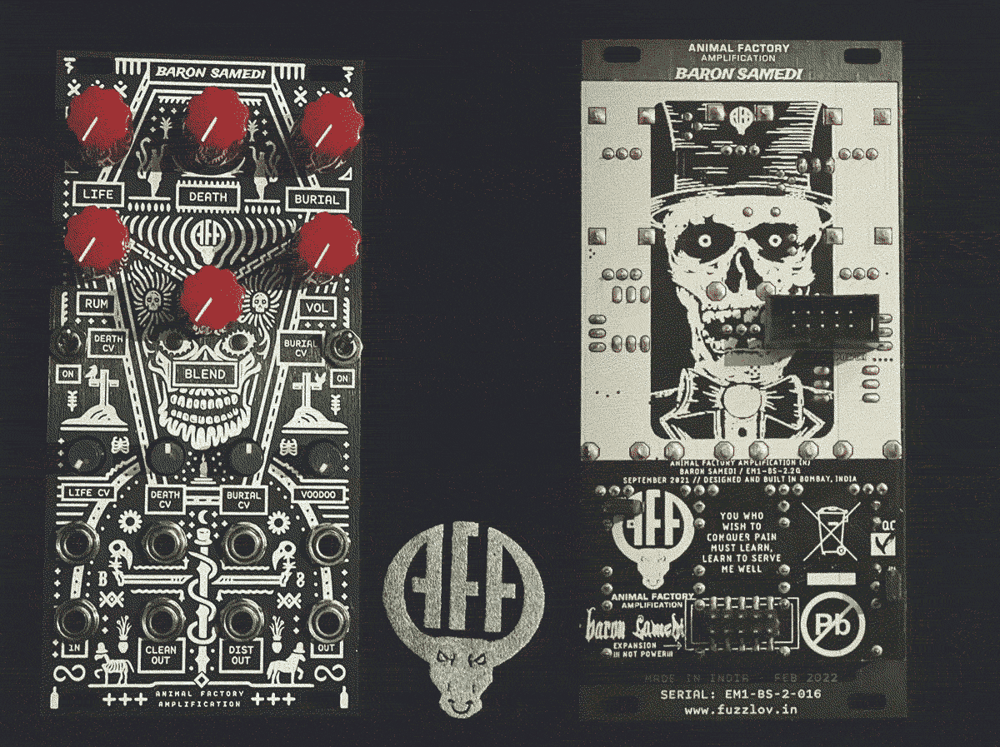

Module Review: Animal Factory Amps - Baron Samedi
04/10/2022

The 12HP Baron Samedi fuzz has been around since 2018 (Version 1) and longer than that in its original stomp box form. The original panel always stood out with the big glaring skull- a little cheesy but there definitely weren’t & aren’t enough skulls in Eurorack so I was all for it. I’d collected a few distortion modules from various manufacturers when I first started in modular but was often a bit disappointed by them and never got round to trying the original version.
The range of distortions seems to have gotten way better in recent years, we’re spoilt for choice now really, but after somehow amassing around 7 or 8 of them, for a while, I just couldn’t justify another. A lot of the less exciting ones can actually sound great when you stack a bunch together though, which is fine or studio use, but not really a practical solution. Version 2 of Baron Samedi, with some extra features and the incredible new panel design, came out around March at a good price and I could resist no longer.
The problems I’ve found with some distortions is that they can be a bit too subtle or one-dimensional, sounding good on a kick drum maybe but not interesting on much else. Some others get pretty wild but not really tameable enough to be useful in many contexts. Others suffer from a lack of CV control or some have nice tones but the wet signal is way quieter than the dry signal so you can’t switch between them in realtime. Luckily none of these are an issue here.
Firstly you’ve got 4 knobs that vary the tone in different ways and distort pretty much anything, so there’s a big range in sound- Rum (gain), Life (notch filter), Death (noise gate thingy) & Burial (harmonic thingy)- oh and also the bonus mini knob, Voodoo (feedback). The Burial knob brings out low harmonics which is great for kick drums and the Rum and Death knobs are satisfyingly loud and destructive.
Drums and other short percussive samples sound especially awesome through it- I like a slow rhythm to allow space for the screaming, self-oscillating feedback- check out the demo video above for some pretty great demonic chicken sounds.
Between the Dry/Wet Blend and separate Wet volume knobs, you have complete control over the amount of distortion so you can easily push it into crazy noisy territory and then dial it back to a more usable level. This makes it a bit more performative, because you can set the volume of the distortion relative to the clean signal, so you don’t have to worry about a massive leap or drop in volume, or if you find an interesting tone that’s a bit quiet- like when messing about with no input- you can bring it up a bit.
The little performance switches for a couple of the CV inputs are a nice addition and they seem to vary the tone a little even if there’s nothing plugged in which is cool. Another great feature, that seems to be standard in their recent modules, is that the CV attenuator knobs light up, so you have visual feedback of the incoming signal, it’s a little thing but so useful. A couple of the CV knobs have a function even when no cable is plugged in which is a nice bonus.
In addition to the mix out, you’ve got dry and wet outputs, I’m not totally sure on the use case for these- I guess it’s so you can do some parallel processing? I’ve tried running them into envelope followers then back into the CV inputs with pretty good results though.
One of the things that I love about it, is that it’s just fun to use, I probably say that about a lot of modules and for people whose priority is optimisation or purely about the sound or workflow, I totally get that, but for me I like modules that are just enjoyable to use, even if they’re not the smallest HP or aren’t always the best tool for the job (though in this case the module feels like a good size for the amount of features). The panel design, the light up red eyes, having knobs labelled “death” and “burial”, just add to the experience for me- maybe I’m easily pleased.
To summarise, fun-factor aside, the Baron Samedi checks all the boxes for what I want in a distortion:
- More destructive than you need it to be
- A variety of tones
- Usable tones- able to maintain some clarity, bass & volume
- CV control to add a bit more depth and experimentation
The quirky panel, light-up attenuverters and performance switches are a nice bonus!
Further reading:
For more on Animal Factory Amps, I interviewed AMA back in issue III when they’d recently released their Godeater distortion in Eurorack form, their Coma Reactor delay and were about to release the beefy Orobas dual tube VCA.
For more about distortion, check out the distortion-themed issue IV!